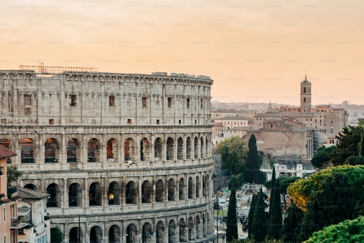
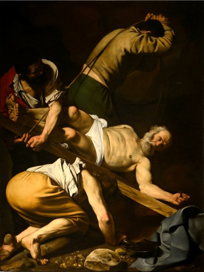
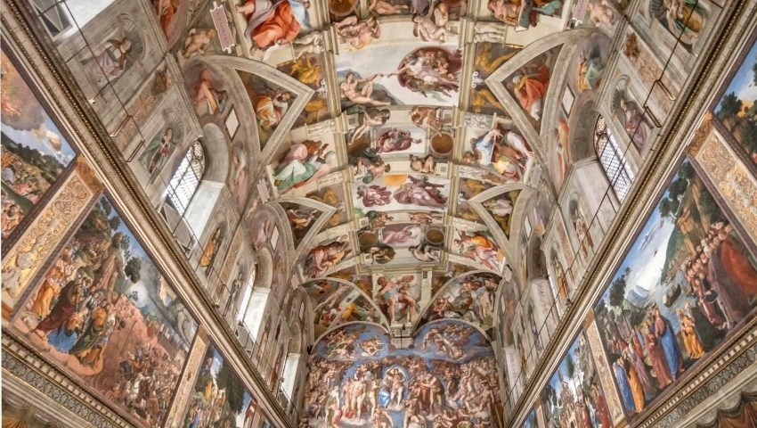

Discovering Rome: Between Empire, Faith and Art
Rome is more than a destination — it’s an open-air museum, a living textbook, and an emotional experience. For Erasmus students and curious travelers, it offers three essential journeys: Imperial Rome, Christian Rome, and Rome of the Museums.
Erasmus Tip: Culture Comes with Discounts
Most museums and monuments offer reduced entry for EU citizens under 25, and if you study architecture, art history, archaeology, or conservation, you often get in for free with your student ID. Don’t forget it — in Rome, your student card is your ticket to centuries of culture.
Imperial Rome: Power Set in Stone
- At the Colosseo, imagine gladiators and roaring crowds.
- Walk through the Foro Romano, once the heart of politics, religion and daily life.
- Marvel at the Pantheon, with its perfect dome and open sky.
- Discover the Teatro di Marcello, Mausoleo di Augusto, Mercati di Traiano, and Castel Sant’Angelo — all built to glorify imperial power.
- Explore Ostia Antica, a remarkably preserved Roman town.
- Stroll or bike along the Via Appia Antica, lined with tombs and ruins.
- Underground, the catacombs (like San Callisto or San Sebastiano) reveal early Christian faith and funerary art.
Christian Rome: Art, Faith and Devotion
- Visit the four major basilicas: San Pietro, San Giovanni in Laterano, Santa Maria Maggiore, and San Paolo fuori le Mura.
- Don’t miss Santa Maria della Vittoria with Bernini’s Ecstasy of Saint Teresa, or San Pietro in Vincoli, home to Michelangelo’s powerful Moses.
- At the Chiesa del Gesù, admire the baroque ceiling and the tomb of Ignatius of Loyola.
- Climb the Scala Santa and visit Santa Croce in Gerusalemme, which holds relics of the Passion.
- In Trastevere, visit Santa Maria in Trastevere and Santa Cecilia.
- Santa Maria del Popolo: Caravaggio’s Conversion of Saint Paul and Crucifixion of Saint Peter, frescoes by Raphael, sculptures by Bernini.
- San Luigi dei Francesi: Caravaggio’s three masterpieces on the life of Saint Matthew.
Rome of the Museums: A Feast of Art and Memory
- Musei Capitolini: Lupa Capitolina, The Dying Gaul, bronze Marcus Aurelius.
- Musei Vaticani: Raphael’s Rooms, Cappella Sistina with Michelangelo’s ceiling and Last Judgment.
- Museo Nazionale Romano (Palazzo Massimo, Altemps, Terme di Diocleziano, Crypta Balbi): Boxer at Rest, ancient mosaics and frescoes.
- Palazzo Barberini: Caravaggio’s Judith Beheading Holofernes, Cortona’s baroque ceiling.
- Palazzo Spada: Borromini’s optical illusion gallery.
- Palazzo Colonna and Galleria Doria Pamphilj: works by Raffaello, Velázquez, Tiziano, Caravaggio.
- Galleria Borghese: Bernini’s Apollo and Daphne, The Rape of Proserpina, Caravaggio’s Boy with a Basket of Fruit.
- Villa Farnesina: Raphael’s Triumph of Galatea and the myth of Cupid and Psyche.